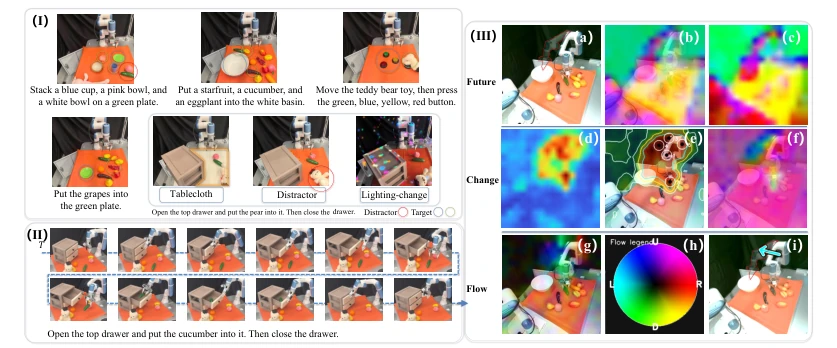
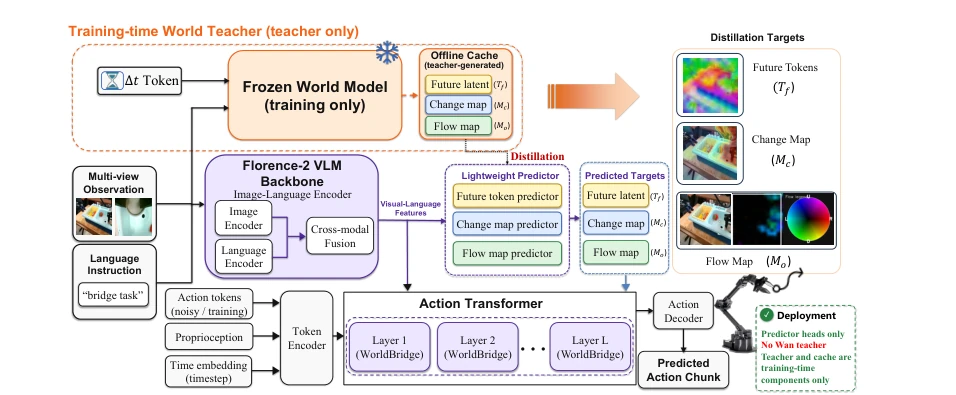
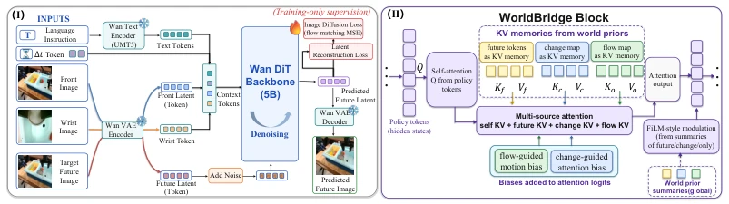
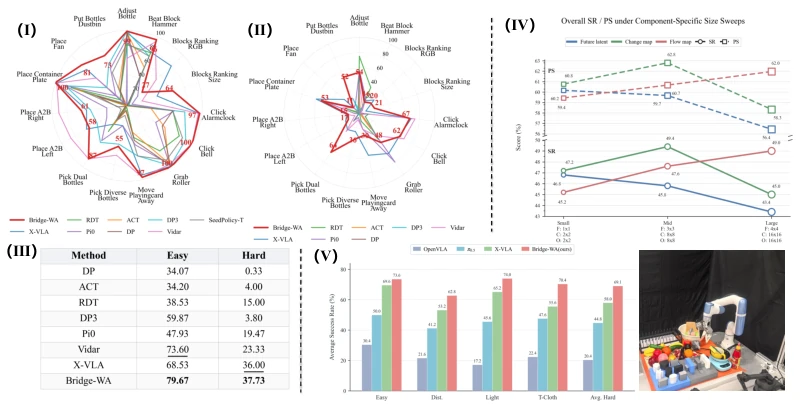
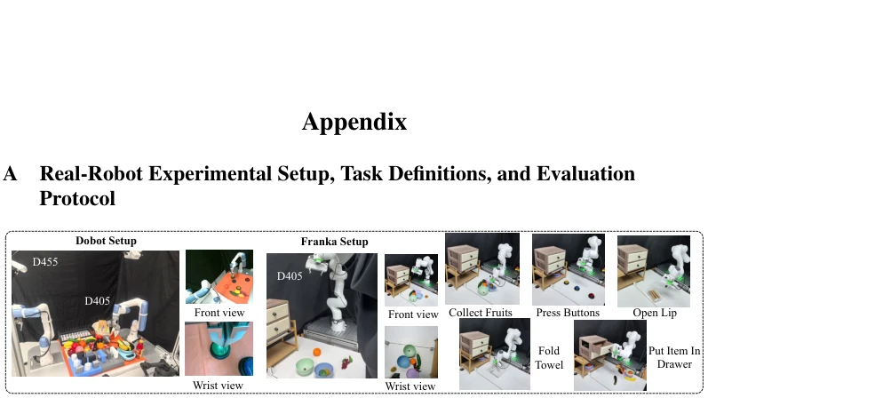
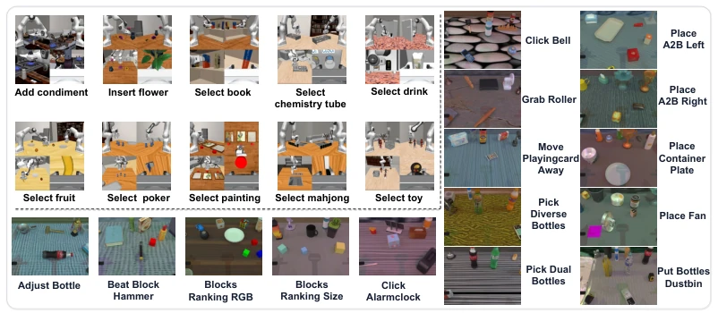
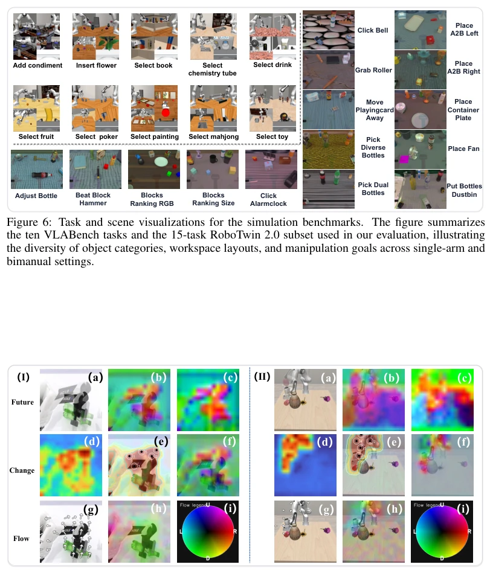
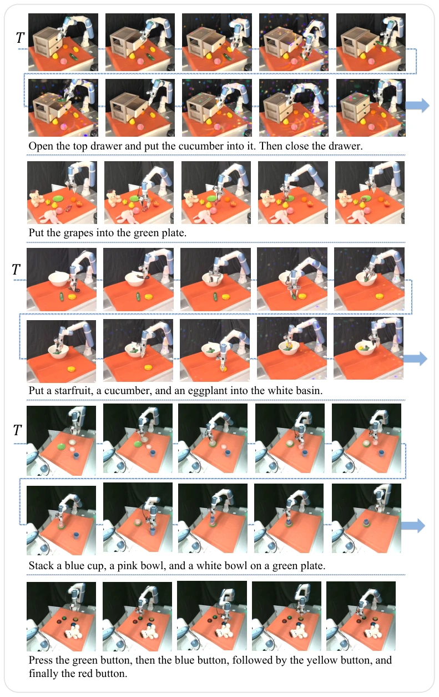

Bridge-WA: Predicting Where and How the World Changes for Robotic Action
Yongjie Bai, Hanting Wang, Mingtong Dai, Qijun Zhong, Yang Liu, Liang Lin abspdf
论文点评Review
这篇论文试图在“反应式 VLA”和“重型世界模型”之间找平衡，算是个聪明的折中方案。作者把 5B 的 Wan 模型蒸馏成三个紧凑先验，部署时扔掉老师模型，确实省了算力。但“蒸馏”这招在机器人领域不算新鲜，关键是蒸馏出来的东西真能替代像素级预测吗？实验显示在分布外（OOD）场景下提升明显，说明它确实学会了忽略背景干扰，这点值得肯定。不过，离线缓存的构建成本被轻描淡写，且依赖老师模型的质量，如果老师本身有幻觉，策略也会跟着疯。总的来说，这是一个“轻量化世界感知”的务实尝试，但别指望它能解决所有长程规划问题，毕竟它还是基于短视的图像空间先验。此外，虽然声称轻量，但训练阶段仍需 5B 模型参与，对于资源受限的机构仍是门槛。
This paper attempts to find a balance between "reactive VLA" and "heavyweight world models", which counts as a clever compromise. The authors distill the 5B Wan model into three compact priors, discarding the teacher model at deployment, which indeed saves computational power. However, the technique of "distillation" is not new in the robotics field; the key question is whether what is distilled can truly replace pixel-level prediction? Experiments show significant improvement in out-of-distribution (OOD) scenarios, indicating it indeed learned to ignore background interference, which is worth affirming. However, the construction cost of the offline cache is downplayed, and it relies on the quality of the teacher model; if the teacher itself has hallucinations, the policy will also hallucinate. Overall, this is a pragmatic attempt at "lightweight world perception", but do not expect it to solve all long-horizon planning problems, after all, it is still based on myopic image-space priors. Furthermore, although claimed to be lightweight, the training phase still requires participation of the 5B model, which remains a barrier for resource-constrained institutions.
Existing general VLA policies mostly directly learn the mapping from observation to action, lacking reasoning about intervention consequences, and are easily interfered by irrelevant factors such as background and lighting [11, 35]. Although World Models can predict environmental evolution, existing World Action Models (WAMs) often rely on large-scale generative models or dense future rollouts, with high inference costs and wasting capacity on weakly coupled control visual details [26, 27]. Robotic manipulation not only requires knowing "what to do", but more importantly needs to predict "where it will change" and "how it will change". Existing methods often perform fragilely under out-of-distribution (OOD) visual shifts, unable to effectively suppress interference factors [30, 31]. Therefore, the research motivation lies in building a lightweight framework that can provide explicit structures of future changes to guide actions, without needing to run expensive generative models at deployment, thereby enhancing perception of causal dynamics while maintaining VLA efficiency.

Figure 3: Real-robot visualization analysis. (I) Five manipulation tasks and OOD evaluation scenes, with target and distractor regions marked. (II) Execution sequence for “Open the top drawer and put the cucumber into it. Then close the drawer.” (III) Teacher-target visualizations from the Dobot Nova2 robot scene, show that BRIDGE-WA distills the future into outcome, change, and motion priors that support world-aware action generation. In (e), the numbered circles denote high-response peaks in the change map, corresponding to localized regions most likely to undergo task-induced change. In (h), the color wheel is the flow legend, where hue encodes motion direction and the L/R/U/D labels indicate left, right, up, and down displacements.
BRIDGE-WA adopts a "distill at training, use lightly at deployment" pipeline. First, pre-train a frozen future change teacher model based on Wan2.2-5B, learning operation-induced scene transitions from real robot data. The teacher model outputs three cached supervision targets: Future Token ($T_f$) summarizes expected outcomes, Change Map ($M_c$) identifies intervention spatial support, Motion Flow Map ($M_o$) encodes local motion direction. Next, train a lightweight predictor to recover these priors from the current context. The policy network (Action Transformer) receives these priors through the WORLDBRIDGE module, utilizing multi-source attention memory and spatiotemporal biases for conditioning. WORLDBRIDGE adopts a hierarchical design: early layers inject Future Token as global context, middle layers inject Change Map to locate interaction areas, near-decoder layers emphasize Flow Map to guide local displacements. At deployment, the teacher model and offline cache are removed, retaining only the predictor and conditioned policy, achieving efficient inference without generating future images. This design avoids VRAM occupancy of generative models during inference, while retaining the causal reasoning capability of world models.

Figure 1: BRIDGE-WA represents the action-relevant future with three compact world-change repre- sentations: future tokens for the intended outcome, change maps for where the scene should change, and motion-flow maps for how the change should move. A lightweight predictor estimates these rep- resentations from the current robot context, and WORLDBRIDGE conditions the action transformer on them for world-aware action generation. The training-time future model and offline cache are removed at deployment.

Figure 2: (I) Robot-state-conditioned teacher world model based on the Wan2.2-5B generative back- bone. (II) WORLDBRIDGE conditioning block. Predicted future, change, and flow representations are projected into memory tokens and attention biases that condition the action transformer without invoking the training-time teacher world model.
Evaluated on VLABench, RoboTwin2.0, LIBERO-Plus, and Dobot physical robots. Metrics include Success Rate (SR), Intent Score (IS), and Progress Score (PS). BRIDGE-WA achieves an average SR of 52.8% on VLABench, outperforming the strongest baseline by 9.7 points; it performs robustly under RoboTwin2.0 Hard settings. LIBERO-Plus zero-shot evaluation shows success rates of 96.7% and 92.8% under lighting and robot state perturbations respectively, significantly outperforming baselines like OpenVLA. Ablation studies indicate the three-layer priors are not interchangeable, and the layered conditioning design performs best. Visualizations show that Change Maps and Flow Maps successfully focus on task-relevant areas, suppressing background noise. Physical robot experiments further verify its robustness in OOD scenarios such as tablecloths and occlusions, proving the effectiveness of structured world priors. Additionally, the authors compared priors of different resolutions, finding that Future Tokens need to be compact, while Flow Maps need high resolution, reflecting a strategy of asymmetric capacity allocation.

Figure 4: Experimental results across simulation, ablation, and real-robot evaluations. (I)-(III) RoboTwin 2.0 results on the 15-task subset, including per-task radar plots under the Easy and Hard tracks and average success rates for each model across both tracks. (IV) VLABench-5 ablation results, reporting the average success rate (SR) and progress score (PS) for each world-prior and conditioning configuration. Here, 1×1, etc. denote the spatial resolution of future, change, or flow priors before flattening into conditioning tokens or spatial biases. (V) Dobot real-robot evaluation results, reporting the average success rate under each evaluation track.

Figure 5: Dobot and Franka real-world setup. Overview. We evaluate the real-robot task execution capability and OOD generalization capabil- ity of BRIDGE-WA on two single-arm platforms: a Dobot Nova2 robot and a Franka FR3 robot. Both platforms use LeRobot-style data with synchronized third-person RGB, wrist RGB, Cartesian robot state, Cartesian end-effector action, timestamps, and task instructions. The action/state vector is seven-dimensional, [x, y, z, roll, pitch, yaw, g], where g ∈[0, 1] denotes the gripper command. Demonstrations are collected at 30 Hz. The Dobot setup uses an Intel RealSense D455 as the third- person camera and an Intel RealSense D405 as the wrist camera, with 480 × 480 videos for both views. The Franka setup uses an ORBBEC Femto Bolt as the third-person camera at 7

Figure 6: Task and scene visualizations for the simulation benchmarks. The figure summarizes the ten VLABench tasks and the 15-task RoboTwin 2.0 subset used in our evaluation, illustrating the diversity of object categories, workspace layouts, and manipulation goals across single-arm and bimanual settings.

Figure 7: Qualitative world-prior visualizations on RoboTwin 2.0 (I) and VLABench (II). We show the factorized predictive signals used by BRIDGE-WA: future representations summarize the in- tended outcome, change maps identify action-relevant regions expected to change, and motion-flow maps indicate the local direction of scene evolution. (a) shows the future RGB target overlaid on the current observation. (b) overlays the predicted future latent representation on the scene, while (c) vi- sualizes the future latent map. (d) presents the change map, and (e) overlays the enhanced change re- sponse on the observation; the marked points indicate high-confidence regions where action-relevant state changes are expected. (f) highlights feature-level differences between the current and future stat

Figure 8: Dobot real-robot execution sequences. The figure shows temporal rollouts for the five real-robot tasks, covering object selection, placement, pushing, stacking, and drawer manipulation.